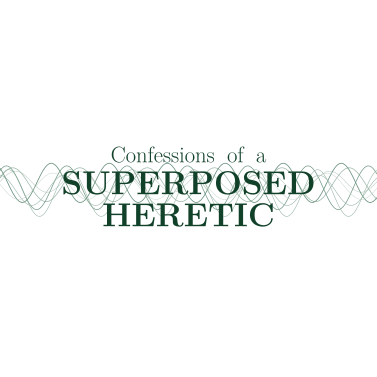

Theoretical Physics · PhD Student
Open quantum systems, and foundations of
quantum mechanics.
I work at the intersection of quantum field theory, open quantum systems, and the foundations of quantum mechanics. Based at the University of Southampton.
Research
Current work
QFT
Collapse models in curved spacetime
Open systems
Foundations
Quantum measurement problem
Numerical
Monte Carlo methods in QFT
Publications
Papers & preprints
Writing
Science communication
For people who find the universe suspicious.
Beyond my PhD, I write about the questions that keep me up at night — why quantum mechanics is so strange, what spacetime actually is, and why physics still has more mysteries than answers.
No equations required.
Fair warning: my Substack asks more questions than it answers. Pull up a chair, subscribe and let's figure thing out together.
Read on Substack →
CV
Education & experience
Links
Find me elsewhere
Academic profiles, code repositories, and other useful places.